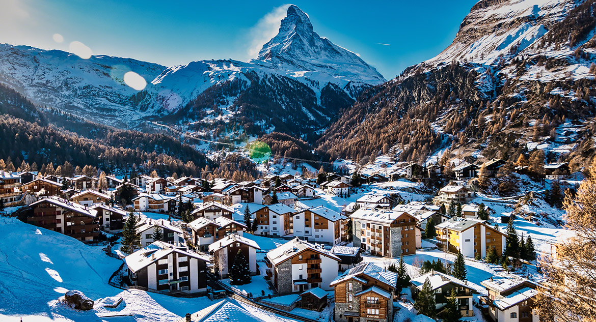

Lugares Turísticos na Europa

Zermatt, Suica
A Suíça é um país montanhoso da Europa Central com um grande número de lagos, vilas e picos elevados dos Alpes.
Saiba mais
Roma, Itália
Roma é uma cidade repleta de história, com fontana di trevi, o Coliseu, o Fórum Romano e o Vaticano entre seus principais atrativos.
Saiba maisCapadócia, Turquia
A Capadócia, uma região semiárida na área central da Turquia, é conhecida pelas inconfundíveis "chaminés de fada", altas formações rochosas em formato de cone agrupadas no Vale dos Monges, em Göreme e em outros lugares.
Saiba mais